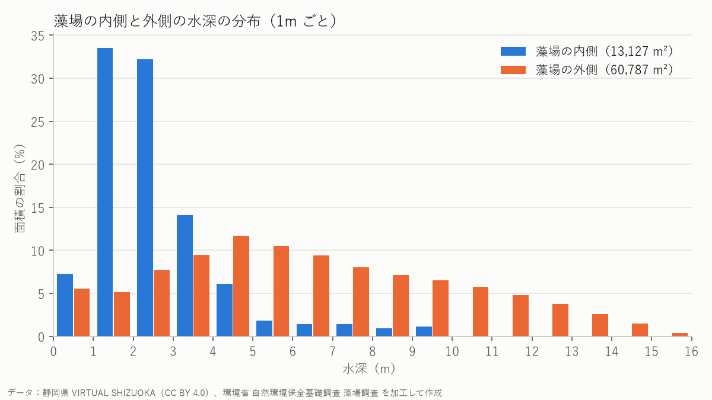

藻場ポテンシャル域の面積
64,874m²
砂泥タイプ 32,460 m² ＋ 岩礁タイプ 32,414 m²
実際の藻場のうち、ポテンシャル域に入った割合
92.3%
岩礁タイプ 85.3%、砂泥タイプ 7.0%
藻場の内側の水深（中央値）
2.25m
藻場の外側は 6.00 m
ポテンシャル域のうち、実際に藻場がある割合
約19%
残りの約8割には藻場がない
水深の区分ごとの面積
| 水深 | 面積（m²） | 面積の大きさ |
|---|
| 0–2 m | 11,879 | |
| 2–5 m | 24,406 | |
| 5–10 m | 26,179 | |
| 10–15 m | 11,223 | |
| 15 m以上 | 227 | |
| データなし | 2 | |
海の面積は合計 73,914 m²（ALBの範囲 120,000 m² のうち、残りの 46,084 m² は陸）。
藻場の内側と外側の水深

藻場の内側では、面積の約66%が水深1〜3mに集まっています（外側では約13%）。一方、藻場の外側は水深3.71〜9.05mあたりに広がっています（真ん中の半分の範囲）。藻場は、とくに浅い場所にできていることがわかります。
断面図（海岸から沖へ）
地形（陸と海底）
海
環境省の藻場
地図上の黒い点線が断面線です。グラフの上で指やマウスを動かすと、地図上にその位置が表示されます。陸（標高12.5m）から始まり、海岸から少し沖の水深約1〜3mのところで藻場の上を通り、北西の水深15.7mまで続きます。
レーザが届かなかった海域
データなし（レーザが届かなかった所）は 2 m² だけで、ALBの範囲 120,000 m² のほぼ0%でした。濁った海や深すぎる海では、グリーンレーザが海底まで届かず、地図に穴があきます。今回の範囲では、海底がほぼすき間なく測れていたといえます。ただし、北西の深い区域（水深およそ10m以上）は、提供データが補間されたような平らな面になっていて、細かい凸凹はわかりません。
まとめ
- 条件がそろっていても藻場がない場所：ポテンシャル域の約8割には藻場がなく、とくに水深5m以上にはほとんどありません。光が弱くなること、水の濁り、水温の上昇、ウニなどが海藻を食べつくす「磯焼け」など、地形だけでは決まらない理由が考えられます。
- 条件外でも藻場がある場所：藻場の約8%（1,015 m²）は簡易ルールの対象外でした。藻場の内側の 7.27% は水深1m未満で、ルール（水深1m以上）から外れています。また、藻場データ（2013年の衛星画像）とALB（2021年ごろ）の時期の差で、藻場の広がりが変わっている可能性もあります。